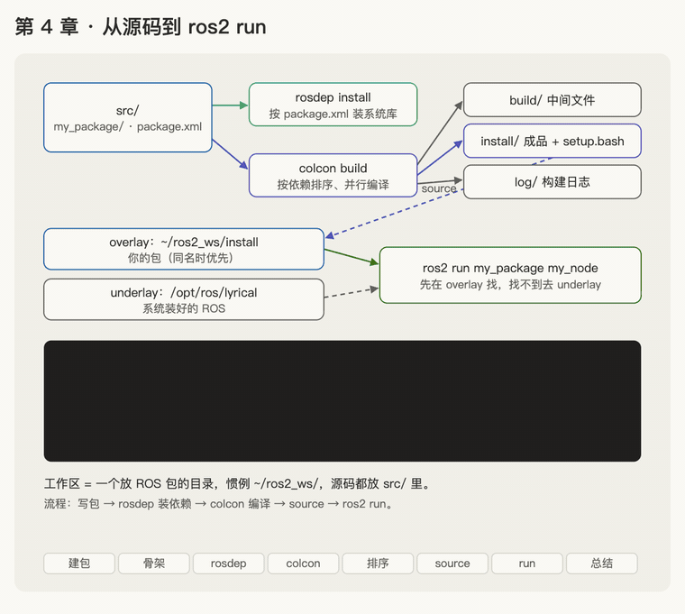

第 4 章 · 工作区、colcon 和第一个包
本章回答：自己写的 ROS 代码放哪？怎么编译？编译完为什么还要 source？"包"里必须有哪些文件？
讲解日期：2026-11-13 · 上一章：第 3 章 日志、launch 和 bag · 下一章：第 5 章 用 Python 写节点
对应原文：ros2_documentation/source/ROS-Framework/client-libraries/Working-with-Client-Libraries/下的Creating-A-Workspace/Creating-A-Workspace.rst、Creating-Your-First-ROS2-Package.rst；ros2_documentation/source/Developer-Tools/Build/About-Build-System.rst（路径相对ros2/materials/）
对应 study-plan 阶段 B1、B6，动手里程碑 R-M2 的前半。
本章缩写：ament（不是缩写，ROS 2 的构建辅助工具集，读作"阿门特"）；colcon = collective construction（集体 / 构建：一次编译一堆包的工具）；CMake = Cross-platform Make（跨平台 / 构建：C++ 常用的构建配置工具）；XML = eXtensible Markup Language（可扩展 / 标记 / 语言）；rosdep = ROS dependency（ROS 依赖安装工具）；apt = Advanced Package Tool（Ubuntu 的软件安装工具）。全部缩写见 附录 · 缩写与术语表
本章先看总图，再分 3 步：
| 步 | 内容 | 状态 |
|---|---|---|
| 0 | 总图：src → rosdep → colcon build → install → source → run | ✅ |
| 1 | 工作区和 overlay / underlay | ✅ |
| 2 | 包：ros2 pkg create、package.xml、Python 包和 C++ 包的骨架 |
✅ |
| 3 | 构建：rosdep、colcon、构建系统三层 | ✅ |
讲解
总图 · 从源码到 ros2 run

可交互版：animations/04-workspace-build.html（内置浏览器：ros2-animations 预览，http://localhost:8340/04-workspace-build.html）。
~/ros2_ws/ ← 工作区（workspace）
├── src/ ← 你只动这里：一个子目录一个包
│ └── my_package/
├── build/ ← colcon 生成：中间文件
├── install/ ← colcon 生成：成品 + setup.bash
└── log/ ← colcon 生成：构建日志
流程：src/ 里写包 → rosdep install 装系统依赖 → colcon build 编译 → 新终端里 source install/setup.bash → ros2 run。
第 1 步 · 工作区和 overlay / underlay
依据：ROS-Framework/client-libraries/Working-with-Client-Libraries/Creating-A-Workspace/Creating-A-Workspace.rst（下称"工作区教程"）。
工作区（workspace）就是一个放 ROS 包的目录，惯例是 ~/ros2_ws/，源码都放在它的 src/ 子目录里（工作区教程第 2 步："把包放进 src 是最佳实践"）。
overlay / underlay：一层叠一层。
- underlay（底层）：你已经装好的 ROS，
/opt/ros/lyrical/。 - overlay（上层）：你自己的工作区。它建立在 underlay 之上，可以用 underlay 里的所有包。
- 同名包时 overlay 优先（工作区教程背景一节："overlay 里的包会覆盖 underlay 里的包"）。
类比：底层是图书馆的正式藏书，上层是你书桌上的笔记。找资料时先翻书桌，书桌上没有再去图书馆。你可以把 turtlesim 的源码克隆进自己的 src/，改一改窗口标题，编译后 ros2 run turtlesim turtlesim_node 跑的就是你改过的版本，而系统里装的那份完全没动（工作区教程第 7 步就是这么做的）。
source 的顺序（工作区教程第 6 步）：
# 新开一个终端！
source /opt/ros/lyrical/setup.bash # 先 source 底层
cd ~/ros2_ws
source install/local_setup.bash # 再 source 上层
local_setup.bash只加上本工作区的包；setup.bash会把本工作区和它编译时用的底层一起加上。所以上面两行等于直接source ~/ros2_ws/install/setup.bash。- 官方特别强调：在一个新终端里 source overlay，不要在编译用的那个终端里 source，也不要在已经 source 了 overlay 的终端里编译，否则会出现难查的问题。
第 2 步 · 包：最小骨架
依据：.../Creating-Your-First-ROS2-Package.rst（下称"建包教程"）。
包（package）是 ROS 代码的组织和发布单位：想让别人能编译、能安装你的代码，就要把它组织成包（建包教程背景第 1 节）。一个工作区可以有很多包，C++ 包和 Python 包可以混放，但包不能嵌套。
建包（在 src/ 里运行）：
ros2 pkg create --build-type ament_python --license Apache-2.0 --node-name my_node my_package
--build-type：ament_python（纯 Python）或ament_cmake（C++，也可以带 Python）。--node-name my_node：顺便生成一个能跑的 hello world 节点。
Python 包的骨架（建包教程背景第 2 节）：
my_package/
├── package.xml ← 包的"身份证"：名字、版本、依赖
├── setup.py ← 怎么安装（Python 标准）；可执行入口写在这
├── setup.cfg ← 有可执行文件时必须有，让 ros2 run 找得到
├── resource/my_package ← 空的标记文件，ROS 工具靠它找包
└── my_package/
├── __init__.py
└── my_node.py
C++ 包的骨架：package.xml + CMakeLists.txt（怎么编译）+ include/my_package/（头文件）+ src/（源文件）。
package.xml 是每个包都必须有的，不管用什么语言（Developer-Tools/Build/About-Build-System.rst ament_package 一节）。核心几行：
<package format="3">
<name>my_package</name>
<version>0.0.0</version>
<description>TODO: Package description</description>
<maintainer email="user@todo.todo">user</maintainer>
<license>Apache-2.0</license>
<depend>rclpy</depend> <!-- 依赖：编译和运行都要 -->
<depend>std_msgs</depend>
<export><build_type>ament_python</build_type></export>
</package>
依赖标签有几种：<depend>（编译和运行都要）、<build_depend>、<exec_depend>（只运行时要）、<test_depend>（只测试要）。依赖要写全：colcon 靠它排编译顺序，rosdep 靠它装系统库。
Python 节点怎么变成 ros2 run 能跑的命令？ 在 setup.py 的 entry_points 里登记：
entry_points={
'console_scripts': [
'my_node = my_package.my_node:main', # 命令名 = 模块路径:函数名
],
},
这就是第 2 章"可执行文件名"的来历。忘了登记，ros2 run 就会说找不到可执行文件。
第 3 步 · 构建：rosdep、colcon 和三层构建系统
rosdep：先把系统依赖装齐。
cd ~/ros2_ws
rosdep install -i --from-path src --rosdistro lyrical -y
它扫描 src/ 里所有 package.xml，把声明了但还没装的依赖（比如 OpenCV、某个 ROS 包）用 apt 装上（工作区教程第 4 步）。全齐时打印 #All required rosdeps installed successfully。rosdep 只在 Linux 上可用。
colcon build：编译整个工作区。 在工作区根目录运行（工作区教程第 5 步）：
$ colcon build
Starting >>> my_package
Finished <<< my_package [1.2s]
Summary: 1 package finished [1.3s]
colcon 先读所有 package.xml，按依赖关系排序：A 依赖 B，就先编 B。互不依赖的包并行编译。常用参数：
| 参数 | 作用 |
|---|---|
--packages-select my_package |
只编这一个 |
--packages-up-to my_package |
编它和它依赖的包 |
--symlink-install |
安装时用软链接指回源码：改 Python 脚本、launch 文件、YAML 后不用重新编译 |
--event-handlers console_direct+ |
编译输出直接打到终端（否则在 log/ 里） |
构建系统的三层（Developer-Tools/Build/About-Build-System.rst）：
| 层 | 是什么 | ROS 2 里用的 |
|---|---|---|
| 构建工具（build tool） | 编译一个包 | C++ 用 CMake，Python 用 setuptools |
| 构建辅助（build helpers） | 给构建工具加 ROS 便利功能 | ament 系列（ament_cmake、ament_python） |
| 元构建工具（meta-build tool） | 编译一堆包，排好顺序 | colcon |
类比：CMake / setuptools 是一个厨师做一道菜；ament 是厨房里的标准化流程卡；colcon 是厨师长，看菜单（package.xml）安排谁先做、谁同时做。
跑起来：新终端里 source 之后，
$ ros2 run my_package my_node
Hi from my_package.
（建包教程第 4 步，Python 版的输出。）
本仓库约定：之后写的代码都放 ros2/solutions/ros2_ws/src/ 下（study-plan 的 R-M2 起），build/ install/ log/ 不入库。
练习与作答记录
练习 4-1（第 1 步）：你在 ~/ros2_ws/src/ 里克隆了 turtlesim 源码，改了窗口标题并编译。新终端里只 source /opt/ros/lyrical/setup.bash，没 source 工作区，ros2 run turtlesim turtlesim_node 打开的窗口标题是改过的还是原来的？为什么？
- 作答：（待作答）
练习 4-2（第 2 步）：你新写了 my_package/talker.py，里面有 main()，编译后 ros2 run my_package talker 报"No executable found"。最可能漏了哪一步？
- 作答：（待作答）
练习 4-3（第 3 步）：工作区里有 robot_msgs（自定义消息）和 robot_driver（用到这些消息）两个包。robot_driver/package.xml 里忘了写 <depend>robot_msgs</depend>。colcon build 可能出什么问题？为什么有时又能侥幸编过？
- 作答：（待作答）
口诀
- 工作区：源码进 src，产物三兄弟（build、install、log）。
- 叠层：先 source 底层，再 source 上层；同名上层优先；新终端里 source。
- 包：
package.xml是身份证，依赖写全；Python 入口写进setup.py。 - 构建：rosdep 装依赖，colcon 排顺序；Python 用
--symlink-install，改了不用重编。
本章复习卡片编号
R13–R14，见 ../review.md。
附录 · 延伸阅读
留给以后深入学习用，不影响本章主线。★ 是建议先读的。
materials/指ros2/materials/；不带前缀的路径在materials/ros2_documentation/source/下（design/、ecosystem/开头的在materials/下）；...表示省略了和上一条相同的目录。
推荐阅读
| 读什么 | 读哪里 | 读它为了什么 |
|---|---|---|
★ Creating-A-Workspace.rst |
materials/ros2_documentation/source/ROS-Framework/client-libraries/Working-with-Client-Libraries/Creating-A-Workspace/Creating-A-Workspace.rst |
工作区、overlay / underlay（第 1 步依据）。 |
★ Creating-Your-First-ROS2-Package.rst |
.../Working-with-Client-Libraries/Creating-Your-First-ROS2-Package.rst |
建包、目录结构、package.xml（第 2 步依据）。 |
Colcon-Tutorial.rst |
.../Working-with-Client-Libraries/Colcon-Tutorial.rst |
colcon 详细用法。 |
Rosdep.rst |
.../Working-with-Client-Libraries/Rosdep.rst |
rosdep 原理与 rosdistro 键。 |
★ About-Build-System.rst |
Developer-Tools/Build/About-Build-System.rst |
构建工具 / 构建辅助 / 元构建工具三层。 |
Ament-CMake-Documentation.rst |
Developer-Tools/Build/Ament-CMake-Documentation.rst、Ament-CMake-Python-Documentation.rst |
C++ 包和 C++ / Python 混合包怎么写 CMakeLists。 |
100_ament.md |
design/articles/100_ament.md、101_build_tool.md |
ament 和 colcon 的设计。 |
Release-Lyrical-Luth.rst |
Releases/Release-Lyrical-Luth.rst 中 "Call ament_python_install_package multiple times" 和 "New CMake target ament_ros_defaults" |
Lyrical 对构建的两处小改进。 |
数学原理
- 拓扑排序：按依赖关系排顺序，被依赖的排前面；colcon 每一轮编"依赖都已编完"的包（代码对照）。
公式清单
| 公式 / 规则 |
|---|
| 找包顺序：后 source 的 overlay → 先 source 的 underlay |
| console_scripts：命令名 = 模块路径:函数名 |
代码对照：把本章的数字用代码算一遍
纯 Python 模拟，不需要 ROS 2（原因见第 1 章这一节）。代码在仓库本地
ros2/solutions/chapter-code/ch04_workspace.py，配套测试tests/test_ch01_05.py；同名 notebook 在notebooks/ch04_workspace.ipynb（讲解和代码放在一起，一格一格跑）。Mac 上直接能跑：
bash cd ros2/solutions/chapter-code uv run python ch04_workspace.py # 一步一步打印 uv run pytest tests/test_ch01_05.py
讲义 ↔ 代码：
| 讲义 | 规则 / 数字 | 写法 | 跑出来 |
|---|---|---|---|
| 第 1 步 overlay | 同名包先找上层 | find_package('demo_nodes_py', layers) |
来自 ~/ros2_ws/install |
| 第 1 步 underlay | 上层没有就去底层 | find_package('rclpy', layers) |
来自 /opt/ros/lyrical |
| 第 3 步 colcon | A 依赖 B 先编 B，互不依赖的并行 | build_order(deps) |
3 轮：[description, msgs] → [driver] → [bringup] |
| 第 2 步 entry_points | 命令名 = 模块路径:函数名 | parse_entry_point(...) |
my_node / my_package.my_node / main |
关键几行：
layers = [overlay, underlay] # 后 source 的排在前面
for layer_name, packages in layers: # 从上往下找，找到就停
if name in packages: return layer_name
ready = [p for p, d in deps.items() if p not in done and d <= done] # 依赖都编完了
rounds.append(ready) # 这一轮可以并行
代码里才看得到的 3 件事：
- 例子里的包名和依赖是编的；
demo_nodes_py在两层都有，只为演示"同名先找上层"。 d <= done是集合的"是不是子集"：一个包的依赖全在"已编完"里，它才能进这一轮。依赖有环时排不出顺序，函数会报错。- colcon 只认 package.xml 里写的依赖：代码里 import 了但没写进去的，它不知道，这正是"依赖要写全"的原因。
自己改一改（不影响练习答案）：
- 在
deps里加一个robot_tests，依赖robot_bringup，看多出第几轮； - 把
layers的顺序倒过来（相当于先 source 上层、再 source 底层），看demo_nodes_py从哪来。